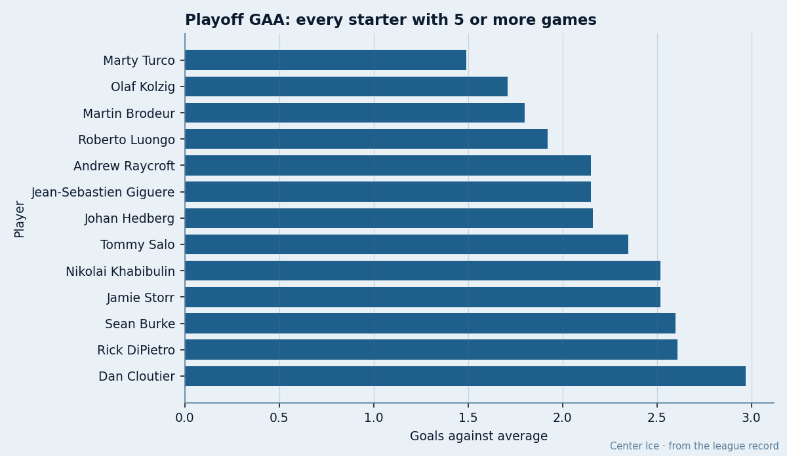
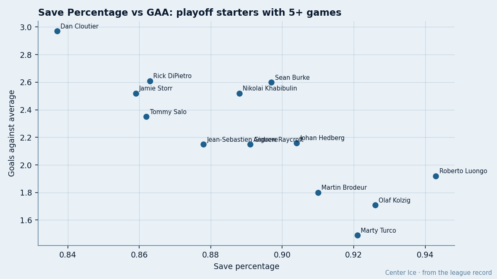

NJ
NJ749 Shots Against 365: The Playoff Goaltending Table Says Luongo Is the Better Man
Turco's 1.49 GAA is Dallas's defensive shell, not Turco's glove. Luongo carries the higher save percentage on nearly double the volume.
 Doug ReimerAnalytics editor, ex-video coach · The Slot Report
Doug ReimerAnalytics editor, ex-video coach · The Slot Report
 Marty Turco93's 1.49 GAA leads the playoffs.
Marty Turco93's 1.49 GAA leads the playoffs.  Roberto Luongo97's 1.92 sits 4th. The gap between them is almost entirely a function of how many shots each man's team lets through.
Roberto Luongo97's 1.92 sits 4th. The gap between them is almost entirely a function of how many shots each man's team lets through.
Luongo faced 749 shots in 1341 minutes this spring. Turco faced 365 in 1164. Luongo carried a .943 save percentage against Turco's .921. The GAA gap is  Dallas Stars's defensive structure doing its job, not Turco outplaying his counterpart.
Dallas Stars's defensive structure doing its job, not Turco outplaying his counterpart.

The method is simple: pull every goaltender with at least 5 playoff starts, sort by GAA, and add the volume column. Here is the full table.
| Goaltender | Club | GS | W | L | Min | GA | SA | GAA | SV% | |
|---|---|---|---|---|---|---|---|---|---|---|
| Marty Turco | DAL | 18 | 14 | 4 | 1164 | 29 | 365 | 1.49 | .921 | |
 Olaf Kolzig92 Olaf Kolzig92 | WSH | 13 | 9 | 4 | 807 | 23 | 309 | 1.71 | .926 | |
 Martin Brodeur97 Martin Brodeur97 | NJ | 5 | 2 | 3 | 300 | 9 | 100 | 1.80 | .910 | |
| Roberto Luongo | TOR | 22 | 13 | 9 | 1341 | 43 | 749 | 1.92 | .943 | |
 Andrew Raycroft85 Andrew Raycroft85 | BOS | 6 | 2 | 4 | 362 | 13 | 119 | 2.15 | .891 | |
 Jean-Sebastien Giguere97 Jean-Sebastien Giguere97 | ANA | 16 | 8 | 7 | 1090 | 39 | 320 | 2.15 | .878 | |
 Johan Hedberg92 Johan Hedberg92 | PIT | 12 | 6 | 6 | 1 | 722 | 26 | 270 | 2.16 | .904 |
 Tommy Salo88 Tommy Salo88 | EDM | 11 | 6 | 5 | 792 | 31 | 225 | 2.35 | .862 | |
 Nikolai Khabibulin93 Nikolai Khabibulin93 | TB | 10 | 4 | 6 | 620 | 26 | 232 | 2.52 | .888 | |
 Jamie Storr85 Jamie Storr85 | COL | 5 | 3 | 2 | 309 | 13 | 92 | 2.52 | .859 | |
 Sean Burke84 Sean Burke84 | PHX | 11 | 5 | 6 | 669 | 29 | 282 | 2.60 | .897 | |
 Rick DiPietro88 Rick DiPietro88 | NYI | 5 | 1 | 4 | 299 | 13 | 95 | 2.61 | .863 | |
 Dan Cloutier90 Dan Cloutier90 | VAN | 5 | 2 | 3 | 344 | 17 | 104 | 2.97 | .837 |
Starts and save percentage
The two finalists split the series 1-1. They are the 2 most-used goaltenders in these playoffs by starts: Luongo 22, Turco 18. Both have played every minute their club needed.
The scatter below plots save percentage against GAA. If goaltending were the only variable, the points would run in a clean diagonal: higher save, lower GAA. They don't. Luongo sits top-right with the best save percentage and the 4th-best GAA. Turco sits bottom-left with a lower save percentage and the best GAA.

What Dallas asks of its goaltender
Dallas Stars entered these playoffs with the 2nd-fewest goals against in the regular season behind  Toronto Maple Leafs. Turco's regular-season GAA of 2.56 on a .874 save percentage already flagged the pattern: the defense in front of him suppresses his GAA while his raw save numbers look ordinary. In the postseason the gap widens. He faces fewer shots per game and the team structure makes those shots lower-danger.
Toronto Maple Leafs. Turco's regular-season GAA of 2.56 on a .874 save percentage already flagged the pattern: the defense in front of him suppresses his GAA while his raw save numbers look ordinary. In the postseason the gap widens. He faces fewer shots per game and the team structure makes those shots lower-danger.
Toronto Maple Leafs plays the other way. Luongo faces a volume that is nearly double Turco's, and the quality of those chances is higher. The .943 is the number that matters. It is the best save percentage among all 13 goaltenders with 5 or more starts, and it sits well above Turco's .921.
The same pattern shows in the teams that fell earlier.  Mighty Ducks of Anaheim's Jean-Sebastien Giguere posted a 2.15 GAA on a .878 save percentage across 16 starts. He faced 320 shots in 1090 minutes, a volume close to Turco's. His GAA looks fine until you see the save percentage: Anaheim's structure gave him a respectable number without requiring him to be elite.
Mighty Ducks of Anaheim's Jean-Sebastien Giguere posted a 2.15 GAA on a .878 save percentage across 16 starts. He faced 320 shots in 1090 minutes, a volume close to Turco's. His GAA looks fine until you see the save percentage: Anaheim's structure gave him a respectable number without requiring him to be elite.  Edmonton Oilers's Tommy Salo faced 225 shots in 792 minutes and posted 2.35 on .862. The GAA is mid-pack; the save percentage is not.
Edmonton Oilers's Tommy Salo faced 225 shots in 792 minutes and posted 2.35 on .862. The GAA is mid-pack; the save percentage is not.
 Phoenix Coyotes's Sean Burke is the outlier in the other direction. A .897 save percentage sits 10th in the table, but he faced 282 shots in 669 minutes, a volume close to
Phoenix Coyotes's Sean Burke is the outlier in the other direction. A .897 save percentage sits 10th in the table, but he faced 282 shots in 669 minutes, a volume close to  Washington Capitals's Olaf Kolzig, who put up .926. Burke's club gave up more high-danger volume and he could not match Kolzig's stopping rate. That is what a GAA of 2.60 on .897 looks like when you control for volume.
Washington Capitals's Olaf Kolzig, who put up .926. Burke's club gave up more high-danger volume and he could not match Kolzig's stopping rate. That is what a GAA of 2.60 on .897 looks like when you control for volume.
The Stanley Cup Final asks the question directly
Game 3 is tomorrow at Toronto Maple Leafs. The series sits 1-1. Luongo has 22 starts and the best save percentage in the field. Turco has 18 and the lowest GAA in the field. One of these numbers is real and one is a team product. The table does not resolve which number predicts a Cup.
| Metric | Turco | Luongo |
|---|---|---|
| Starts | 18 | 22 |
| Minutes | 1164 | 1341 |
| Shots faced | 365 | 749 |
| GA | 29 | 43 |
| GAA | 1.49 | 1.92 |
| SV% | .921 | .943 |
| Shutouts | 0 | 2 |
Turco has none in 18 starts. Luongo has 2, both this postseason. When a goaltender carries that volume and still keeps his team in games that go to the wire, the save percentage is doing the work that the GAA gets credit for.